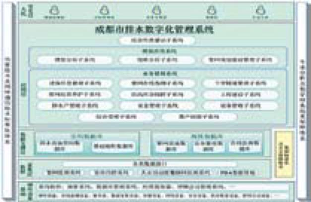
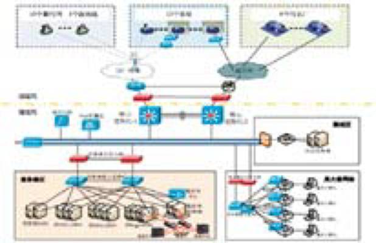
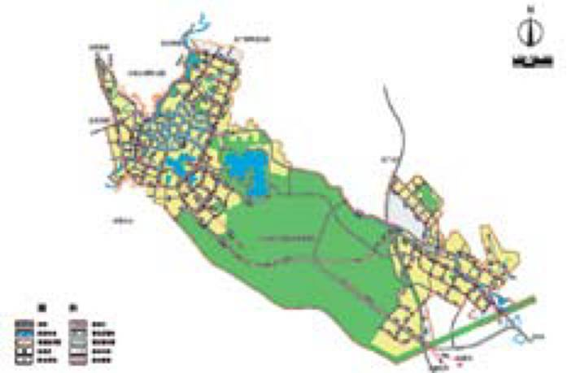
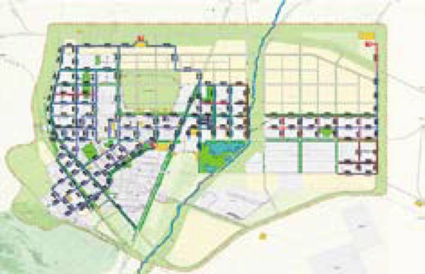
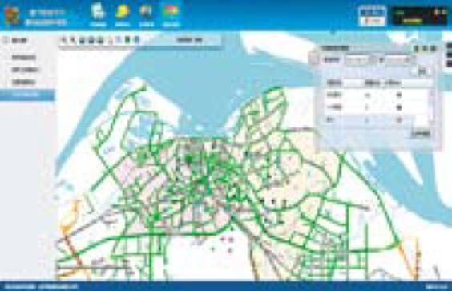
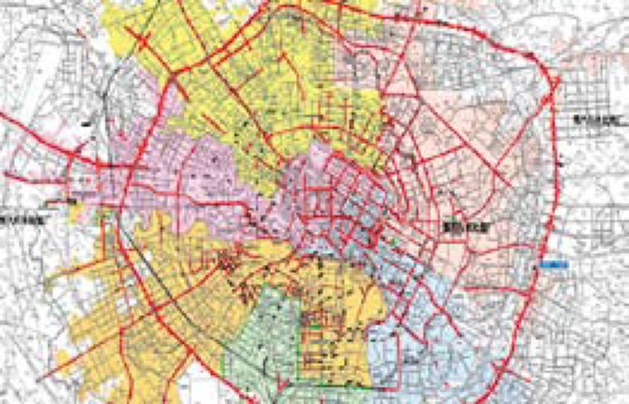
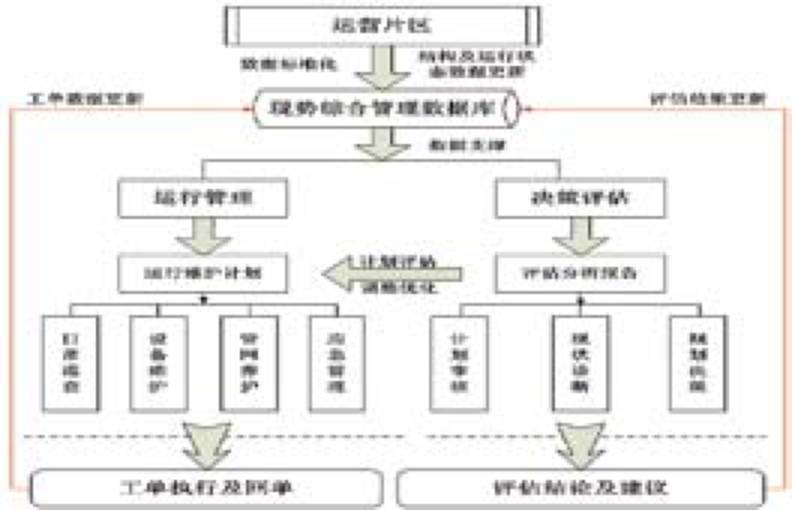

Service
服务
-
Digital construction and consultation
数字化建设总体规划咨询服务服务内容
● 可行性研究方案
● 前期建议咨询方案
● 数字化建设规划方案
服务内容
● 长期致力于先进的行业技术深入研究和积累
● 为全国多个城市提供了数字化建设咨询服务，积累了丰富的咨询服务经验
● 具备十余年的数字化建设实践经验，能提供更为实用、可行、同时具备先进性的数字化建设总体规划咨询服务方案
经典案例
-
成都市中心城区排水管网数字化管理系统规划
规划内容：综合数据库建设规划、业务管理软件规划、监测与模型综合应用规划、硬件支撑平台规划、系统预算及实施计划等，为成都市中心城市建设“排水一张图”，实现“成都智慧排水”，提供重要依据。
 -
广州市番禺区排水数字化管理系统项目建设方案
以实现“数字水务”为目标，以业务支撑和决策支撑为重点，建设水务一体化管理的信息综合体系，确定今后广州市番禹区排水信息化建设的业务系统和建设步骤，提出完整的广州市番禺区排水数字化管理系统项目建设方案。

其他成功案例
● 智慧水务信息系统建设规划
● 宜兴公用事业信息化建设规划方案
-
······
Special planning for waterlogging control & drainage
综合防涝及排水专项规划服务内容
● 城市排水（雨水）防涝综合规划编制
● 污水处理及再生利用设施规划编制
● 排水专项规划编制
● 基于模型进行排水防涝能力及规划方案评估
特色与优势
● 参与编制《城市排水（雨水）防涝综合规划编制大纲》
● 多年的排水系统建模低影响开发及规划管理实践经验
● 多学科交叉的专业化服务团队
● 专业化、自主开发的模型模拟工具（Dgital Water Simulation 1.0）
经典案例
-
西充县排水（雨水）防涝综合规划
西充县排水（雨水）防涝综合规划

规划范围：西充县约46.86平方公里县城范围
项目内容：城市排水设施的发展目标和总体布局利用自主开发的数字排水平台进行模型构建实现城市排水防涝能力与内涝风险评估合理确定建设标准 -
金昌市综合管网规划
规划范围：金昌市52.3平方公里中心城区

项目内容：污水系统规划、污泥规划、雨水及防洪设施规划利用自主开发的数字排水平台进行模型构建 模拟、分析和评估：管网运行负荷、河道水位分析等
其他成功案例
● 镇江市城市排水（雨水）防涝综合规划
-
······
Database construction & software development
数据库建设及软件定制化开发服务内容
-
● 提供排水设施数据标准化处理服务
-
● 提供软件定制化开发服务（包括设施信息管理、在线监测、设备管理、巡查养护、防汛应急、排水服务、安全管理、工程建设、成本管理、客户服务等)
特色与优势
● 编制《城市排水防涝设施普查数据采集与管理技术导则》
● 十余年软件定制化开发和实施经验，深刻理解行业管理及发展需求
● 实现了13,000余公里排水管线的资产管理
● 定制化开发范围覆盖排水管理各项业务，覆盖从规划设计、设施建设到管理运营的整个排水设施生命周期
● 基于业务流程实现各子系统之间的数据关联关系
● 基于模型应用提供规划、调度等决策支持系统
经典案例
-
镇江市给排水数字化信息管理系统
项目内容：基于GIS技术，采用CS/BS/MS的混合架构，建设给排水行业管理平台、数字排水平台和数字给水平台，分别应用于给排水管理处、排水管理处以及自来水公司，共26个子系统，业务涵盖决策支持、营业收费、信息交互、规划设计、高效生产、供应管理、运营维护、监控报警、应急管理、调度管理等方面，为管理者科学决策提供重要的平台和工具。

其他成功案例
● 宜兴市污水管网运营监控与管理平台
● 北京排水集团运营监控中心
● 无锡高新水务污水管网综合管理系统
······
Application of monitoring & modeling
监测与模型综合应用服务内容
● 分析在线监测数据及业务数据的趋势性和周期性
● 定制化开发相关模型应用系统，包括现状分析系统、调度运行系统、规划管理系统等
● 构建排水系统模型，实现排水系统现状评估、规划方案评估、城市非点源污染评估、调蓄池运行效能评估、雨洪利用规划、设计与评估、雨水管网溢流分析与管理、内涝风险影响评估等
特色与优势
● 具备多年的监测和业务数据分析经验，积累专业的数据分析和挖掘方法
● 利用自主研发的模型模拟工具，具有国际领先的模型构建理念和方法
● 在排水建模领域积累了十余年的研究和实践经验
● 已完成了成都、无锡、镇江等5000余公里的排水模型构建和应用
经典案例
-
成都市中心城区排水管网运行情况分析与研究
项目内容：运用国际排水领域最成功的管网研究分析技术--水动力模拟与在线监测集成应用技术，对成都市中心城区污水管网进行系统模拟、分析和评估。通过可靠稳健的水动力模拟以及科学系统的大规模流量监测，可以定量识别管网瓶颈，剖析排水管网运行问题，为排水管网系统的管理、改造提供科学依据。
 -
无锡高新区排水管网建模及分析
选择国际领先的排水管网模型模拟引擎，建立适用于无锡高新水务排水管网模拟及应用的无锡新区排水管网模型。并基于关键节点流量与液位监测数据分析，对模型参数进 行调整，利用通过验证的模型，进行管网现状评估分析包括管网结构状况分析、系统负荷分析、流速分布状况评价以及污水厂扩建规模合理性分析等，为无锡高新区管理提供了重要参考和依据。

其他成功案例
● 无锡市高新区排水管网建模及分析
● 北京市非点源污染评估平台
● 澳门半岛排水管网模拟分析平台
● 首钢雨水排水与利用规划方案研究
······
Digital operation of drainage infrastructure
排水设施数字化运营服务内容
● 排水设施数字化运营
● 为排水设施运营提供一套数字化管理服务
特色与优势
● 已具备一套成熟、经过实践检验的数字化管理方法、技术和产品；
● 具有数字化排水运营和管理经验。
经典案例
-
深圳市排水管网及泵站特许委托运营
项目内容：为深圳市排水管网及泵站提供技术支持，构建数字化排水管网运营管理与维护模式，提供一套成熟、经过实践检验的数字化管理方法、技术和产品，以实现运营区域排水管网及泵站的经济、高效、科学地运营管理和维护。
